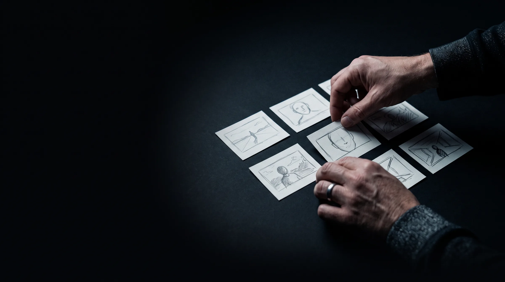
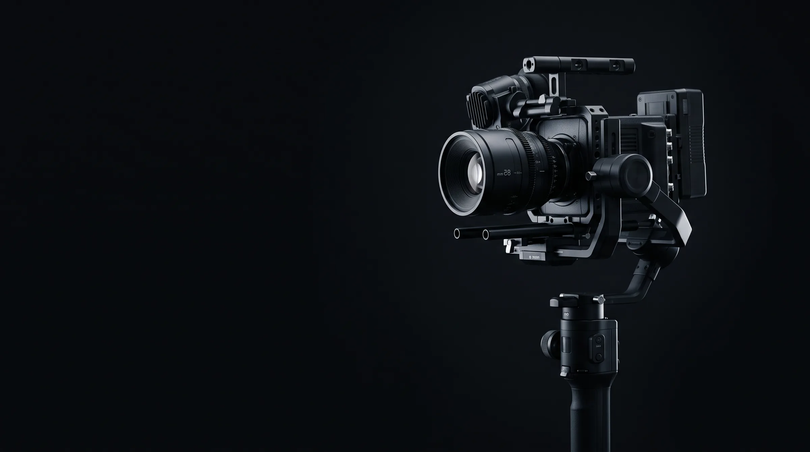
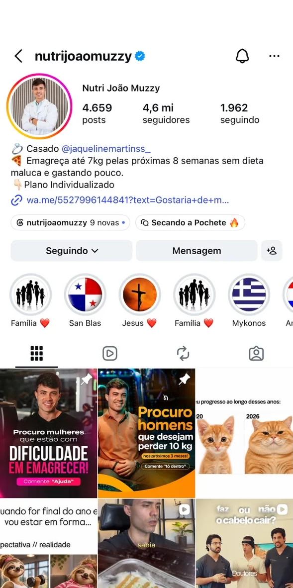
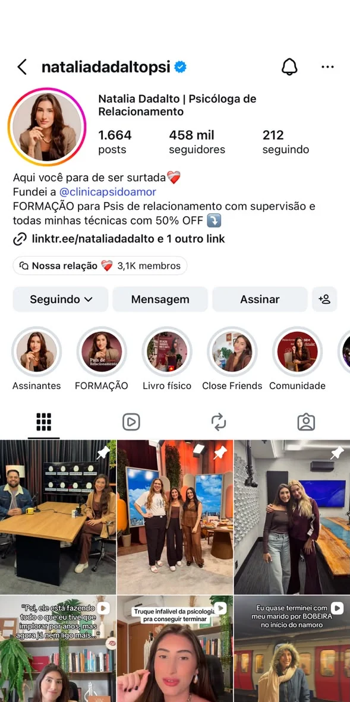
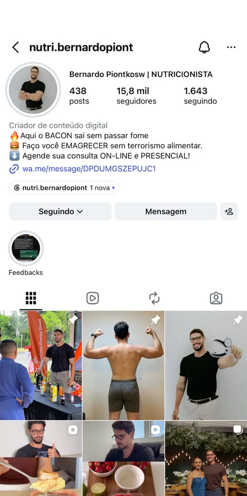
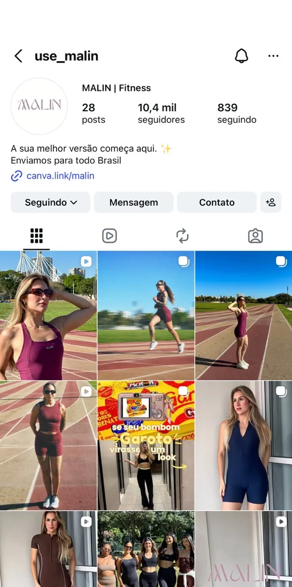

Análise de mercado
Quem compra, por que compra, quanto paga e o que o concorrente já está falando. É o mapa que a gente desenha antes do primeiro take.

Da análise de mercado ao anúncio rodando, tudo o que a sua empresa precisa para crescer no digital.
Antes de ligar a câmera, a gente estuda o seu mercado.
O seu negócio na frente da lente.
Falar no WhatsApp
Vídeo bonito que não vende é custo. Na NEX, todo projeto começa por uma pergunta: o que precisa acontecer no faturamento da sua empresa?
A partir dela a gente estuda o seu mercado, o seu cliente e o que a concorrência já está dizendo. Só então decide o que gravar, como editar e onde anunciar.
Quem compra, por que compra, quanto paga e o que o concorrente já está falando. É o mapa que a gente desenha antes do primeiro take.
Oferta, canais, formatos e calendário de publicação definidos a partir de uma meta de faturamento, não de curtidas.
Gancho, argumento e chamada para ação. Cada roteiro sai da mesa com um objetivo de venda escrito nele.
Câmera de cinema, luz e som direto, no seu espaço ou em estúdio. Com direção para quem está na frente da lente, inclusive para quem nunca gravou.
Ritmo, cor, legenda e trilha pensados para segurar a atenção. Da mesma gravação saem cortes para Reels, YouTube e anúncios.
Os vídeos viram campanhas. Testamos criativos, lemos os dados e colocamos a verba no que está trazendo cliente.

+70 milhõesde visualizações por mês nas redes sociais, somando os perfis dos nossos clientes.
Há anos a NEX produz para o João Muzzy, o maior nutricionista da América Latina, e para outros grandes nomes do digital.




Conta pra gente o que você vende e aonde quer chegar. A gente responde pelo WhatsApp.